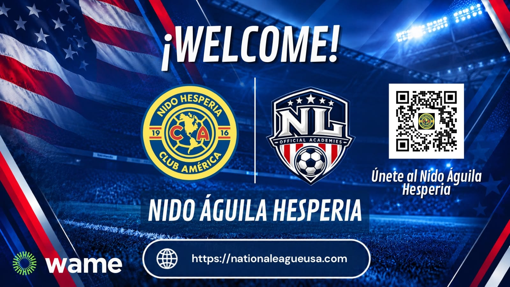

Nido Águila Hesperia se incorpora a la National League

La academia oficial del Club América da un importante paso en su desarrollo deportivo al integrarse a una plataforma internacional que apuesta por la competencia de alto nivel, la innovación tecnológica, la formación integral y la proyección de nuevos talentos.
La National League Official Academies continúa fortaleciendo su estructura y expandiendo su presencia con la incorporación de Nido Águila Hesperia, que oficialmente se suma a este ambicioso proyecto de desarrollo futbolístico.
Esta integración representa un paso trascendental para la academia, que tendrá la oportunidad de formar parte de una plataforma competitiva diseñada para impulsar el crecimiento de las academias filiales oficiales, elevar sus estándares deportivos y generar nuevas oportunidades para el talento juvenil.
A través de la National League Official Academies, Nido Águila Hesperia podrá competir en un entorno de mayor exigencia, enfrentarse a academias de alto nivel y formar parte de un proyecto que busca fortalecer los procesos de formación, elevar la competitividad y ampliar los horizontes de proyección para sus jugadores.
Tecnología e innovación al servicio del talento
Uno de los grandes diferenciadores de la National League Official Academies será la implementación tecnológica de Wame Sports, una herramienta que permitirá llevar el seguimiento deportivo de los futbolistas a un nuevo nivel.
Cada jugador participante contará con un perfil deportivo individual, mediante el cual se podrá concentrar y dar seguimiento a información relevante de su trayectoria y desarrollo dentro de la competencia.
Esta innovación busca impulsar procesos de formación más profesionales, facilitar el seguimiento de cada futbolista y construir un historial deportivo que permita identificar su evolución y potencial.
Además, esta plataforma representa una ventana de oportunidades para los jugadores, al fortalecer sus posibilidades de proyección hacia nuevos escenarios competitivos, procesos de visoría, oportunidades de desarrollo deportivo e incluso el acceso a importantes becas académicas y deportivas.
De esta manera, la National League Official Academies apuesta por integrar el fútbol con la tecnología, ofreciendo herramientas que permitan acompañar el crecimiento de los jugadores más allá de los resultados dentro de la cancha.
Un proyecto que va más allá de la competencia
Más que una liga, la National League Official Academies representa una plataforma de desarrollo y proyección. Un espacio donde las academias oficiales pueden medir su crecimiento, fortalecer sus estructuras deportivas y brindar a sus futbolistas experiencias que contribuyan a su evolución dentro y fuera de la cancha.
Con esta incorporación, Nido Águila Hesperia reafirma su compromiso con la formación de nuevos talentos y se suma a una iniciativa que busca construir nuevas oportunidades para las academias oficiales y sus jugadores.
¡Bienvenidos a la National League Official Academies!
El siguiente nivel de competencia, tecnología y proyección comienza aquí.